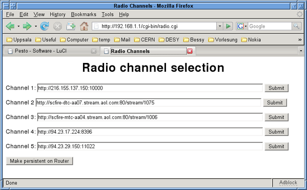

Internet Radio Router
Internet Radio Router
My family's DSL hookup is in the kitchen, and we distribute Internet access around the house with a wireless router, but so far, we cannot listen to Internet radio in the kitchen. Of course, I could buy a commercial off-the-shelf Internet radio, but what is the fun in doing that? On the other hand, I could buy a Linux-based wireless router with USB, connect a USB sound card to it, and have fun making the whole enchilada work in a (moderately) user-friendly way, such that other members of the family can also use it. In order to make the project reasonably lightweight and manageable over a summer break I decided to avoid hardware modifications (as much fun as that may be) or the installation of large software packages like perl on the router. Almost all programming is done with shell scripts.
Before starting, I'd like to point out that listening to an Internet radio stream at 128 kbits/sec generates 1.4 GB of network traffic in a 24 hour period. You might want to keep this in mind, if you do not have a flat-rate plan, but have to pay proportionate to the volume of your Internet access. That being said, let's delve into implementation details, and start by discussing hardware.
Hardware
I purchased what must have been the last available ASUS WL-500g Premium, with two USB2 connectors on the back. Any other router will probably work, if it has at least one USB port and can have its operating system (firmware) replaced by a Linux-based system that also supports USB. I chose OpenWRT [1] which is a Debian derivative for embedded appliances and comes with support and drivers for many gadgets, in particular the inexpensive no-name USB sound card that I bought. (The lsusb command reports 0d8c:000c C-Media Electronics, Inc. Audio Adapter.) In order to hear the music, I connected the sound card's output to some active speakers I had lying around. Standard headphones should also work, but I would refrain from using passive speakers, because the USB sound card receives power via the USB port, and larger passive speakers might load the USB port beyond tolerable levels.
System Software
Installing a new Linux-based operating system on the router is next: I follow the installation instructions for OpenWRT 8.09.1 (Kamikaze) [2] and re-flash the firmware of the router. I can then log on to the router for the first time. Immediately after flashing, the router has the default IP address 192.168.1.1, and I can connect a computer to one of the router's LAN ports. By default, the router has a DHCP server enabled, such that any computer requesting an IP via DHCP can connect. I then use telnet to log on to the router as user 'root'. No password is needed as long as the root password is not set with the 'passwd' command. Once it is set, one needs to use ssh for shell access. For testing and developing, I prefer shell access, but standard administrative tasks such as adjusting network settings or installing additional software can be more easily done with the LuCI Web-based interface, which can be reached by pointing your browser to the router, which still has IP address 192.168.1.1, unless you have changed it. You need to log on as user 'root' with the previously chosen password. You can now change all router settings and install additional drivers and software. To have full access to all configuration features, select 'Administration' mode, on the top right of LuCI's interface.
Before we can install more software, we need to connect the router to the Internet. This is helped by the router's WAN port being configured, by default, to request an IP from whatever it is connected to. I hooked up the ASUS's WAN port to one of the LAN ports on the old DSL router in our kitchen. In this way, the ASUS has access to the Internet, and can contact software repositories.
The initial OpenWRT installation does not support USB devices, we have to install drivers to enable the use of USB memory sticks and the USB sound card. In LuCI the software installation page can be found under the tab labelled 'System/Software'. First, update the package lists by selecting the top-left link on the Software page, which causes the page to be reloaded with a large number of available packages. Install packages by checking a box in the appropriate line, and pressing the 'Perform Actions' button at page bottom. There is a useful filter function available, which makes finding appropriate packages easy.
For USB memory stick support I follow Ref. [3] and install the kernel modules kmod-usb-uhci, kmod-usb-ohci, kmod-usb2 for generic USB1 and USB2 support. Since most USB memory sticks come with a FAT file system, I also install kmod-fs-vfat. When installing from the LuCI Web-interface, all relevant modules are already loaded, so no insmod commands are needed. The kernel-module required for the sound card is kmod-usb-audio, as described in Ref. [4].I also install the madplay mp3-player package. For debugging purposes, the usbutils package, which contains the lsusb command, is useful.
After installing all required packages, I finally log on to the router via ssh to get a command shell, and follow Ref. 4 to play an Internet radio station from the shell by entering
wget -q -O - http://94.23.29.150:11022 | madplay -
To my utter surprise, this worked the first time I tried — commendations to the OpenWRT developers. In the above command, wget pulls the mp3 radio stream from IP and port number http://94.23.29.150:11022 and pipes it to standard output, where madplay receives it and uses the default sound device /dev/dsp as output, where it is made audible on the speakers. Note that this constitutes the core of the Internet radio player. However, logging on to the router to start it is rather inconvenient. Moreover, there is only one useful button on the router, which makes building a user interface without direct computer access difficult. Further on, I describe my user interface to the Internet radio router.
A word about finding an Internet radio station's address is in order. I usually find stations by selecting them from http://www.shoutcast.com/ and playing in xmms on my desktop computer. In xmms, the 'view file info' selection in the file menu (or pressing CTRL-3) reveals the station's address.
User Interface
The fact that only a single button is available for a user interface makes it necessary to contemplate what functionality is essential, and how often different activities happen. For example, turning the radio on or off, or switching between radio stations, will happen frequently and should be possible without an extra computer, by just using the single available button. Consequently, I will program the button to cycle between five pre-selected radio stations and 'OFF' as the sixth state. Selection of stations is aided by short sound files, stating the channel number, that are played before selection of a new station. Changing the pre-selected stations occurs much more rarely, and will use the Web server, including cgi-bin facilities, available on the router that normally serves the LuCI interface.
Let's start with programming the button. There are actually two buttons on the back of the router: one is red and protruded, and labelled 'EzSetup'. The another one is labeled 'Restore', and requires a pointed device such as a pen to activate. I will therefore use only the 'EzSetup' button. It turns out to be rather simple to do so. All the following activities are performed while ssh'd into the router and using the vi editor installed on it. The button is triggered asynchronously to other router activities, and is therefore under the control of a 'hotplug' daemon with configuration files under /etc/hotplug.d/. Under this directory, we first need to create subdirectory /etc/hotplug.d/button/, and, in this subdirectory, we create the script handler that is executed when a button is pressed. This functionality is also used to turn the wireless network on or off, as explained in Refs. [5] [6]. Specific information pertaining to the ASUS router can be found in Ref. [2].
Before discussing the script, we need to make its existence known to the system. All configuration information is stored in the subdirectory /etc/config/, where I create a file radio to hold all persistent information, surving any router reboots. My copy of that file is reproduced below:
# file: /etc/config/radio config 'radio' option 'button' 'ses' option 'state' '0' option 'ch1' 'http://216.155.137.150:10000' option 'ch2' 'http://scfire-dtc-aa07.stream.aol.com:80/stream/1075' option 'ch3' 'http://scfire-mtc-aa04.stream.aol.com:80/stream/1006' option 'ch4' 'http://94.23.17.224:8396' option 'ch5' 'http://94.23.29.150:11022'
The first non-comment line states the parameter name, here radio, followed by options. The most important one is the assigned button ses. I also added a state, used to keep track of the station just listened to, and also to tell which station is next. The parameters labeled chX store addresses of the pre-selected radio stations. On the command line or in scripts, parameters can be read using the uci command using the following construction uci get radio.@radio[0].state and written by uci set radio.@radio[0].state=3 , where we use the state variable in this example. The other parameters can be changed in a similar way. The program uci is a convenient interface on OpenWRT to access configuration parameters. It does, however, manipulate copies of the parameters only in memory, not on disc. Current parameters can be written to the configuration file using the command uci commit radio , which will again make the values persistent. This feature will be used to change the pre-selected radio stations.
Having made available the configuration variables that keep track of the current station and the station addresses, we can now discuss the action taken when the back-panel button is pressed. Remember, this is stored in file /etc/hotplug.d/button/handler. A fragment of the file is reproduced here:
#!/bin/sh # file: /etc/hotplug.d/button/handler # logger button handler: $BUTTON $ACTION $SEEN STATE=$(uci get radio.@radio[0].state) CH1=$(uci get radio.@radio[0].ch1) CH2=$(uci get radio.@radio[0].ch2) CH3=$(uci get radio.@radio[0].ch3) CH4=$(uci get radio.@radio[0].ch4) CH5=$(uci get radio.@radio[0].ch5) if [ $BUTTON = "ses" ] then if [ $ACTION = "released" ] then killall wget if [ $SEEN -gt "0" ] then STATE=-1 fi case $STATE in 0 ) madplay /root/radio/ch1.mp3 wget -q -O - $CH1 |\ madplay - & uci set radio.@radio[0].state=1 ;; 1 ) madplay /root/radio/ch2.mp3 wget -q -O - $CH2 |\ madplay - & uci set radio.@radio[0].state=2 ;; * ) uci set radio.@radio[0].state=0 madplay /root/radio/off.mp3 ;; esac fi fi
A complete copy is here. Pushing the router's back-panel button triggers execution of this file. The system also supplies three environment variables $BUTTON, $ACTION, and $SEEN at runtime. The variable $BUTTON can have the values ses or reset, depending whether one has pressed the red protruded EzSetup button or the other button. The variable $ACTION can have the values 'pressed' or 'released', depending on what happened to the button. Variable $SEEN contains the number of seconds since the last button event. We will use it to distinguish short versus long button presses. These variables will play a prominent role in the script that we will briefly describe now. At the top of the handler script the state variable is read, which keeps track of the station. It also assigns the station addresses to variables CHX. Then, we check that the EzSetup button named 'ses' has been activated; the following section runs only if the button is released. If we didn't check for either 'pressed' or 'released', the script would run twice, once when the button is pressed, and once when released. By checking the release event, we can distinguish between short and long button presses, because the $SEEN variable is reset to zero at both events. If $SEEN is zero, less than a second has elapsed between button pressed and released. Once inside the if statements, we kill any active wget process, since we can listen to only a single station at a time.
The associated madplay process also gets killed, because the parent process is gone. Then we check the $SEEN variable, and set the $STATE variable to a value that will cause the following case statement to reach a state that turns the radio off. The case statement itself is used to cycle through the stations: if the state is '0', it will start station 1, and so forth. In each case section, first a short mp3 sound file gets played to identify the station. On my desktop computer, I recorded myself saying 'Channel one', and converted the recording to a mp3 file named ch1.mp3 and copied the files via 'scp' to the router, but anything can go here. You could, for example, extract the jingle of the radio station and put it in a file. Playing this short identifier is just an aid to figuring out which radio station has been selected. This is followed by the construction with wget piped into madplay, discussed above, and the state variable gets incremented by one. I use five stations to cycle through, and the last section just tells me that the radio is off and does not receive data from the Internet.
The construction with the handler script provides basic functionality to step through a set of pre-selected radio stations, but changing these stations still requires logging on to the router and editing the configuration files by hand. We remedy that deficiency in the next section.
Changing Stations
The router already sports a Web server to support the LuCI configuration interface. All served files are located under the directory /www/, and even cgi-bin functionality is supported if one places executables in directory /www/cgi-bin/. This means that we can use a Web browser to run programs on the router — cool, eh? Just make certain that the router is accessible only from a trusted network.
First, however, we have to prepare a Web page to tell us what the five current radio stations are. The following script excerpt does that.
#!/bin/sh
# file: /www/cgi-bin/radio.cgi
echo 'HTTP/1.0 200 OK'
echo 'Server: Netscape-Communications/3.0'
echo 'Content-type: text/html'
echo
ch1=$(uci get radio.@radio[0].ch1)
ch2=$(uci get radio.@radio[0].ch2)
ch3=$(uci get radio.@radio[0].ch3)
ch4=$(uci get radio.@radio[0].ch4)
ch5=$(uci get radio.@radio[0].ch5)
header='<HTML><HEAD><TITLE>Radio Channels</TITLE></HEAD><BODY>
<H1 ALIGN=CENTER>Radio channel selection</H1>'
echo $header
echo '<FORM action="setchannel.sh" method="get">'
echo -n 'Channel 1: <input type="text" name="ch1" size="80" value="'
echo -n $ch1; echo '"> '
echo '<input type="submit" value="Submit">'
echo '</FORM>'
:
echo '<FORM action="setchannel.sh" method="get">'
echo -n 'Channel 5: <input type="text" name="ch5" size="80" value="'
echo -n $ch5; echo '"> '
echo '<input type="submit" value="Submit">'
echo '</FORM>'
echo '<FORM action="commit.sh" method="get">'
echo '<input type="submit" value="Make persistent on Router">'
echo '</FORM>'
echo '</BODY></HTML>'
I just omitted a few copies of the five-line FORM statement for channel 2, 3, and 4, but the complete script is available here. The script must be made executable (chmod +x radio.cgi) and placed in /www/cgi-bin/. Pointing your desktop computer's Web browser to 192.168.1.1/cgi-bin/radio.cgi will show a Web page with five lines, where the radio stations are shown, and each line has a button on the right with 'Submit' written on it. (See screen shot, below.)
The idea is to change the radio station's address in the text area, and press the submit button to update the router's setting. Precisely that is part of the radio.cgi script's functionality. Note that the script gets executed under cgi-bin, which implies that all script output, normally written to standard output, must be redirected to the calling Web browser. In the script, all output therefore gets generated by an echo command. The first few lines prepare the standard header all Web browsers expect, and then variables chX get filled with the station addresses. Then, HTML header information gets defined and written by an echo command.
The next five lines define a form containing the text field with the station address, that is already filled with the current address. This is followed by the submit button definition. In the FORM definition's first line, the action="setchannel.sh" portion defines a program that must reside in the router's cgi-bin directory to receive the contents of the text field -- the station address -- if the submit button gets pressed. Please consult any book on HTML about how HTML forms and cgi-bin work in detail; for example, Ref. [7] or [8]. The final three-line FORM statement is used to execute the router's commit.sh script to make the variables persistent across router reboots.
The receiving end of the main FORM construction is the setchannel.sh script, which must be made executable (chmod +x setchannel.sh) and likewise placed in /www/cgi-bin/. A copy is shown below:
#!/bin/sh
# file: /www/cgi-bin/setchannel.sh
decode(){
echo $QUERY_STRING |\
sed 's/+/ /g'| sed 's/\%0[dD]//g' |\
awk '/%/{while(match($0,/\%[0-9a-fA-F][0-9a-fA-F]/))\
{$0=substr($0,1,RSTART-1)sprintf("%c",0+("0x"substr(\
$0,RSTART+1,2)))substr($0,RSTART+3);}}{print}'
}
TMP=$( decode )
CHAN=${TMP%=http*}
URL=${TMP:4}
uci set radio.@radio[0].$CHAN=$URL
echo "Setting Channel $CHAN to station $URL"
A copy for download is available here. In this script we first define a function to undo the URL decoding imposed on the variables sent by the FORM in script radio.cgi. I adapted a script found at Ref. [9] to decode the QUERY_STRING and then a little shell scripting to extract the channel and URL. A final uci set command sets the variables on the router. Note that this sets radio station addresses only in the router's memory. In order to make them persistent, we need to execute a uci commit radio command using the commit.sh script, reproduced below:
#!/bin/sh
# file: /www/cgi-bin/commit.sh
uci set radio.@radio[0].state=0
uci commit radio
echo 'Channel selection made permanent on Router'
We see that it only initializes the state variable to the initial value zero, and then executes the commit script and echos what it did to the calling Web browser.
Using the presented interface, it is possible to change the desired radio stations' addresses, and make them persistent. Selecting one of the five stations, or turning the radio off, is then easily done by using the rear-panel red button. Our router is now permanently placed in the kitchen, and is used to play music from Internet radio stations.
Of course, a router with USB connectivity is a magnificent device for further activities. One could, for example, consider attaching a Bluetooth dongle (see Ref. [10]), and use a Bluetooth-capable cell 'phone to control radio station selection. I discuss how to do that on the 'phone in Ref. [11]. Including the Internet radio control features into the LuCI interface would also be a nice project. But you, dear reader, will certainly come up with other fun ways to use a marvelous box such as a router with USB.
References
[1] http://www.openwrt.org
[2] OpenWrtDocs/Hardware/Asus/WL500GP on page http://oldwiki.openwrt.org/TitleIndex.html
[3]
http://oldwiki.openwrt.org/UsbStorageHowto.html
[4]
http://oldwiki.openwrt.org/UsbAudioHowto.html
[5] OpenWrtDocs/Customizing/Software/WifiToggle on page
http://oldwiki.openwrt.org/TitleIndex.html
[6]
https://forum.openwrt.org/viewtopic.php?id=11565
[7] R. Darnell, et al., HTML4 Unleashed, SAMS Publishing, 1999.
[8] http://de.selfhtml.org/ (unfortunately only available in German)
[9] http://do.homeunix.org/UrlDecoding.html
[10]
https://forum.openwrt.org/viewtopic.php?id=1650
[11]
Desktop Bluetooth Remote, Linux Gazette 153, August 2008.
Talkback: Discuss this article with The Answer Gang
![[BIO]](../gx/authors/ziemann.jpg)
Volker lives in Uppsala, Sweden and works as a physicist on particle accelerator based projects at CERN in Switzerland and DESY in Germany. He was forced into using computers during his undergraduate thesis in the mid-eighties and has used them with growing enthusiasm ever since. He is an active Linux user since 1995.